Содержание
Таблицы представляют взаимоотношения между данными. Авторы специфицируют эти взаимоотношения на языке документа и их представление в CSS двумя способами - визуально и звуком.
Авторы могут специфицировать визуальное форматирование таблицы как прямоугольной сетки ячеек. Ряды и столбцы ячеек можно организовать в группы рядов и столбцов. Ряды, столбцы, группы рядов, группы столбцов и ячейки могут иметь вокруг себя порисованные рамки (в CSS2 есть две модели рамок). Авторы могут выровнять данные в ячейках по вертикали и по горизонтали и выровнять данные во всех ячейках ряда или столбца.
Авторы могут также специфицировать звуковое представление таблицы: то, как заголовки и данные будут звучать. На языке документа авторы могут помечать лэйблами ячейки и группы ячеек так, что при звуковом отображении заголовки ячеек будут произноситься перед данными ячеек. Фактически это "сериализует" таблицу: пользователи, прослушивающие таблицу, услышат последовательность заголовков и последующих данных.
Вот простая таблица из трёх рядов и трёх столбцов, написанная в HTML 4.0:
<TABLE> <CAPTION>Это простая таблица 3x3</CAPTION> <TR id="row1"> <TH>Header 1 <TD>Cell 1 <TD>Cell 2 <TR id="row2"> <TH>Header 2 <TD>Cell 3 <TD>Cell 4 <TR id="row3"> <TH>Header 3 <TD>Cell 5 <TD>Cell 6 </TABLE>
Этот код создаёт одну таблицу (элемент TABLE), три ряда (элементы TR), три заголовочных ячейки (элементы TH) и шесть ячеек данных (элементы TD). Обратите внимание, что три столбца в этом примере специфицированы неявно: в таблице столько столбцов, сколько затребовано заголовочными ячейками и ячейками данных.
Следующее правило CSS центрирует текст по горизонтали в заголовочных ячейках и выводит данные шрифтом, имеющим вес bold:
TH { text-align: center; font-weight: bold }
Следующее правило выравнивает текст заголовочных ячеек по их базовой линии и центрирует текст по вертикали в каждой ячейке данных:
TH { vertical-align: baseline }
TD { vertical-align: middle }
Следующие правила специфицируют, что верхний ряд будет окружён сплошной голубой рамкой толщиной 3px и каждый из других рядов будет окружён сплошной чёрной рамкой толщиной 1px:
TABLE { border-collapse: collapse }
TR#row1 { border-top: 3px solid blue }
TR#row2 { border-top: 1px solid black }
TR#row3 { border-top: 1px solid black }
Заметьте, однако, что рамки вокруг рядов перекрываются там, где ряды смыкаются. Какого цвета (чёрного или голубого) и толщины (1px или 3px) будет рамка между рядами row1 и row2? Мы обсудим это в разделе о разрешении конфликтов рамок.
Следующее правило помещает заголовок таблицы над таблицей:
CAPTION { caption-side: top }
Наконец, следующее правило специфицирует, что при звуковом выводе каждый ряд данных произносится как "Заголовок, Данные, Данные":
TH { speak-header: once }
Например, первый ряд будет произнесён "Заголовок1
Ячейка1 Ячейка2".
С другой стороны, со следующим правилом:
TH { speak-header: always }
будет звучать "Заголовок1 Ячейка1 Заголовок1 Ячейка2".
Этот пример показал, как CSS работает с
элементами HTML 4.0; в HTML 4.0 семантика различных
элементов таблицы (TABLE, CAPTION, THEAD, TBODY, TFOOT, COL,
COLGROUP, TH и TD) основательно проработана.
В других языка документов (таких как
приложения XML) может не быть
предопределённых элементов таблицы.
Поэтому CSS2 позволяет авторам "map/отображать" элементы
языка документа в элементы таблицы через
свойство 'display'.
Например, следующее правило заставляет
элемент FOO работать как элемент TABLE в HTML, а
элемент BAR - как элемент CAPTION:
FOO { display : table }
BAR { display : table-caption }
Мы обсудим различные элементы таблицы в следующем разделе. В данной спецификации термин элемент таблицы относится к любому элементу, участвующему в создании таблицы. "Внутренний" элемент таблицы это тот, который производит ряд, группу рядов, столбец, группу столбцов или ячейку.
Табличная модель CSS базируется на табличной модели HTML 4.0, структура таблиц которой почти параллельна визуальному представлению. В данной модели таблица состоит из необязательного заголовка и любого числа рядов столбцов. О табличной модели говорится, что в ней "ряды первичны", поскольку авторы явно специфицируют ряды, а не столбцы, в языке документа. Столбцы определяются после того, как будут специфицированы все ряды - первая ячейка каждого ряда принадлежит первому столбцу, вторая - второму столбцу и т.д.). Ряды и столбцы могут быть сгруппированы структурно, и это группирование отражается при представлении (например, рамка может быть прорисована вокруг группы рядов).
Таким образом, табличная модель состоит из таблиц, заголовков, рядов, групп рядов, столбцов, групп столбцов и ячеек.
Модель CSS не требует, чтобы язык документа содержал элементы, соответствующие каждому из этих компонентов. Для языков документов (таких как приложения XML), не имеющих предопределённых табличных элементов, авторы обязаны отображать элементы языка документа в элементы таблицы; это делается с помощью свойства 'display'. Следующие значения 'display' назначают семантику таблицы произвольному элементу:
Элементы с 'display', установленным в 'table-column' или 'table-column-group', не выводятся (в точности так, как если бы они имели 'display: none'), но используются, поскольку могут иметь атрибуты, вводящие определённый стиль для представляемых ими столбцов.
Таблица стилей по умолчанию для HTML 4.0 в приложении иллюстрирует использование этих значений в HTML 4.0:
TABLE { display: table }
TR { display: table-row }
THEAD { display: table-header-group }
TBODY { display: table-row-group }
TFOOT { display: table-footer-group }
COL { display: table-column }
COLGROUP { display: table-column-group }
TD, TH { display: table-cell }
CAPTION { display: table-caption }
ПА могут игнорировать эти значения свойства 'display' для документов HTML, поскольку авторы не должны изменять ожидаемое поведение элемента.
Языки документов, кроме HTML, могут не иметь всех элементов табличной модели CSS2. В таких случаях "отсутствующие" элементы обязаны учитываться, для того чтобы табличная модель работала. Отсутствующие элементы генерируют анонимные объекты (например, анонимные боксы при визуальном выводе таблицы) в соответствии со следующими правилами:
В этом примере XML принимается, что элемент 'table' содержит элемент HBOX:
<HBOX> <VBOX>George</VBOX> <VBOX>4287</VBOX> <VBOX>1998</VBOX> </HBOX>
поскольку ассоциированная таблица стилей:
HBOX { display: table-row }
VBOX { display: table-cell }
В этом примере три элемента 'table-cell' содержат текст в ROWs/рядах. Заметьте, что текст далее инкапсулируется в анонимные инлайн-боксы, как разъясняется в модели визуального форматирования:
<STACK> <ROW>This is the <D>top</D> row.</ROW> <ROW>This is the <D>middle</D> row.</ROW> <ROW>This is the <D>bottom</D> row.</ROW> </STACK>
Таблица стилей:
STACK { display: inline-table }
ROW { display: table-row }
D { display: inline; font-weight: bolder }
От ПА HTML не требуется создавать анонимные объекты в соответствии с вышеприведёнными правилами.
Ячейки таблиц могут принадлежать к двум контекстам: рядам и столбцам. Однако в документе-источнике ячейки являются потомками рядов и никогда - столбцов. Несмотря на это, некоторые аспекты ячеек могут вводиться установкой свойств столбцов.
Следующие свойства применяются к элементам столбцов и групп столбцов:
Вот примеры некоторых правил таблиц
стилей, устанавливающих свойства столбцов.
Первые два правила вместе выполняют
атрибут "rules" HTML 4.0 со значением "cols".
Третье правило делает столбец "totals"
голубым, а последние два правила
показывают, как установить для столбца
фиксированный размер, используя фиксированный
алгоритм вывода.
COL { border-style: none solid }
TABLE { border-style: hidden }
COL.totals { background: blue }
TABLE { table-layout: fixed }
COL.totals { width: 5em }
В терминах модели визуального форматирования поведение таблицы может быть похожим на элемент уровня блока или замещаемый элемент инлайн-уровня. У таблиц есть содержимое, заполнение, рамки и поля.
В
обоих случаях элемент таблицы генерирует анонимный бокс,
содержащий сам бокс таблицы и бокс
заголовка (если имеется). Боксы таблицы и
заголовка имеют каждый свои собственные
области содержимого, заполнения, полей,
рамки; и размеры прямоугольного анонимного
бокса являются наименьшими возможными для
вмещения обоих боксов.
Вертикальные поля сжимаются в тех местах,
где боксы таблицы и заголовка
соприкасаются. При любом перемещении
таблицы нужно перемещать весь анонимный
бокс, а не просто бокс таблицы, поскольку
вместе с ним перемещается и заголовок
таблицы.
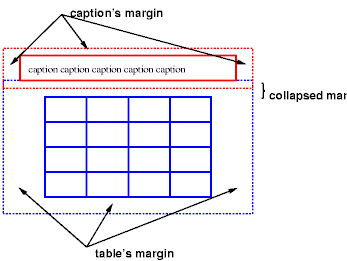 [D]
Диаграмма таблицы с заголовком вверху; нижнее поле заголовка сжато вместе с верхним полем таблицы.
| Значение: | top | bottom | left | right | inherit |
| Начальное: | top |
| Применяется: | к элементам 'table-caption' |
| Наследуется: | да |
| Процентное: | N/A |
| Носитель: | визуальный |
Это свойство специфицирует позицию бокса
заголовка относительно бокса таблицы.
Значения имеют следующий смысл:
Заголовки сверху или снизу от элемента 'table' форматируются совершенно так же, как если бы они были элементами блока до и после таблицы, за исключением того, что (1) они наследуют наследуемые свойства таблицы и (2) они не рассматриваются как бокс блока для целей элементов 'compact' или 'run-in', которые могут предшествовать таблице.
Заголовок сверху или снизу от бокса таблицы ведёт себя подобно боксу блока и при расчётах ширины; ширина вычисляется относительно ширины бокса таблицы содержащего блока.
Для заголовков слева или справа от бокса таблицы значение, отличное от 'auto' для 'width', устанавливает ширину явно, но 'auto' сообщает ПА, что нужно выбрать "приемлемую ширину". Она может варьироваться от "самого узкого возможного бокса" до "строки", поэтому мы рекомендуем, чтобы пользователи не специфицировали 'auto' для ширины левых и правых заголовков.
Чтобы выровнять
содержимое заголовка по горизонтали внутри
бокса заголовка, используйте свойство 'text-align'.
Для вертикального выравнивания левых и
правых боксов заголовка относительно бокса
таблицы используйте свойство 'vertical-align'. В этом
случае возможны только значения 'top', 'middle' и 'bottom'.
Все другие значения рассматриваются как 'top'.
Здесь свойство 'caption-side' размещает заголовок под таблицей. Заголовок будет той же ширины, что и родитель таблицы, и текст заголовка будет выровнен по левому краю.
CAPTION { caption-side: bottom;
width: auto;
text-align: left }
В этом примере показано, как разместить заголовок в левом поле. Сама таблица центрирована установкой левого и правого полей в 'auto', а весь бокс с таблицей и заголовком сдвинут в левое поле на ту же величину, что и ширина заголовка.
BODY {
margin-left: 8em
}
TABLE {
margin-left: auto;
margin-right: auto
}
CAPTION {
caption-side: left;
margin-left: -8em;
width: 8em;
text-align: right;
vertical-align: bottom
}
Принимая, что ширина таблицы меньше доступной ширины, форматирование будет примерно таким:
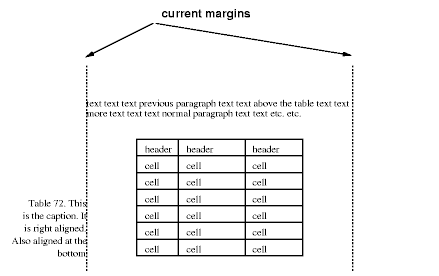 [D]
Диаграмма показывает центрированную таблицу с заголовком, растянутую в левое поле как результат негативного значения свойства 'margin-left'.
Подобно другим элементам языка таблицы, внутренние элементы таблицы генерируют прямоугольные боксы с содержимым, заполнением и рамками. Однако они не имеют полей.
Визуальное представление этих боксов управляется прямоугольной нерегулярной сеткой из рядов и столбцов. Каждый бокс занимает целое число ячеек сетки, определяемое в соответствии с нижеследующими правилами. Эти правила не применяются к HTML 4.0 или более ранним версиям HTML; HTML имеет свои собственные ограничения на охват рядов и столбцов.
Примечание. Ячейки таблицы могут быть позиционированы относительно или абсолютно, но это не рекомендуется: позиционирование и всплывание удаляет бокс из прорисовки, влияя на выравнивание таблицы.
Вот два примера. Первый - документ HTML:
<TABLE> <TR><TD>1 <TD rowspan="2">2 <TD>3 <TD>4 <TR><TD colspan="2">5 </TABLE>
<TABLE> <ROW><CELL>1 <CELL rowspan="2">2 <CELL>3 <CELL>4 <ROW><CELL colspan="2">5 </TABLE>
Вторая таблица сформатирована, как на правом рисунке. Однако представление таблицы HTML явно не определено HTML, и CSS не пытается определить его. ПА свободны в том, как отобразить её, например, как на левом рисунке.
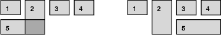 [D]
Слева - возможное представление ошибочной таблицы HTML 4.0; справа - единственно возможное форматирование такой же не-HTML таблицы.
Для того, чтобы найти фон для каждой ячейки таблицы, различные элементы таблицы можно представить себе как состоящие из шести накладывающихся слоёв. Фон, установленный в элементе, это один из слоёв, который будет виден, только если слои над ним имеют прозрачный фон.
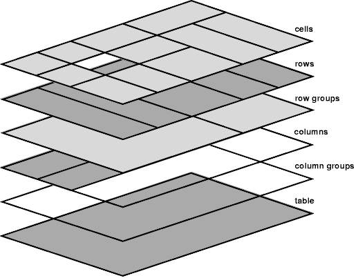 [D]
Схема слоёв таблицы.
Самый нижний слой - цельный, представляющий весь бокс таблицы. Подобно другим боксам, он может быть прозрачным.
Следующий слой содержит группы столбцов. Группы столбцов - такой же высоты, как и таблица, но они не должны перекрывать всю таблицу по горизонтали.
Сверху над группами столбцов находятся области, представляющие боксы столбцов. Как и группы столбцов, столбцы - такой же высоты, как и таблица, но они не должны перекрывать всю таблицу по горизонтали.
Следом идёт слой групп рядов. Каждая группа рядов - такой же ширины, как таблица. Все вместе группы рядов полностью перекрывают таблицу сверху вниз.
Предпоследний слой содержит ряды. Ряды также покрывают всю таблицу.
Самый верхний слой содержит ячейки. Как показано на рисунке, хотя все ряды имеют одинаковое количество ячеек, не каждая ячейка может иметь специфицированное содержимое. Эти "пустые" ячейки прозрачны, что позволят нижележащим слоям просвечивать.
В следующем примере первый ряд содержит 4 ячейки, но второй ряд не содержит ячеек, и, таким образом, виден фон таблицы, исключая те места, где ячейка первого ряда захватывает и этот ряд. Следующий код HTML и правила стилей -
<!DOCTYPE HTML PUBLIC "-//W3C//DTD HTML 4.0//EN">
<HTML>
<HEAD>
<STYLE type="text/css">
TABLE { background: #ff0; border-collapse: collapse }
TD { background: red; border: double black }
</STYLE>
</HEAD>
<BODY>
<P>
<TABLE>
<TR>
<TD> 1
<TD rowspan="2"> 2
<TD> 3
<TD> 4
</TR>
<TR><TD></TD></TR>
</TABLE>
</BODY>
</HTML>
может быть сформатирован так:
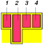 [D]
Таблица с тремя пустыми ячейками в нижнем ряду.
CSS не определяет "оптимальный" вид таблицы, поскольку во многих случаях это дело вкуса. CSS не определяет ограничения того, как ПА обязан выводить таблицу. ПА могут использовать любой возможный алгоритм и свободны предпочесть скорость точности отображения, если только не выбран "алгоритм фиксированного вывода ".
| Значение: | auto | fixed | inherit |
| Начальное: | auto |
| Применяется: | к элементам 'table' и 'inline-table' |
| Наследуется: | нет |
| Процентное: | N/A |
| Носитель: | визуальный |
Свойство 'table-layout'
контролирует алгоритм, используемый для
вывода ячеек, рядов и столбцов таблицы.
Значения имеют следующий смысл:
Эти два алгоритма описаны ниже.
В этом (быстром) алгоритме горизонтальный вывод таблицы не зависит от содержимого ячеек; он зависит только от ширины таблицы, ширины столбцов и от рамок и заполнения ячеек.
Ширина таблицы может быть специфицирована явно свойством 'width'. Значение 'auto' (и для 'display: table', и для 'display: inline-table') означает использование алгоритма автоматического вывода таблицы.
В алгоритме фиксированного вывода ширина каждого столбца определяется так:
Ширина таблицы будет тогда больше значения свойства 'width' для элемента таблицы и суммарной ширины столбцов (плюс заполнение ячеек или рамки). Если таблица шире, чем столбцы, оставшееся пространство должно быть равномерно распределено между столбцами.
При таком методе ПА может начать вывод таблицы сразу, как только будет получен весь первый ряд. Ячейки в последующих рядах не влияют на ширину таблицы. Любая ячейка, имеющая переполняющее содержимое, использует свойство 'overflow' для определения того, сжимать ли переполняющее содержимое.
В этом алгоритме (требующем обычно не более двух шагов), ширина таблицы определяется шириной её столбцов (и промежуточных рамок). Этот алгоритм отражает поведение некоторых популярных ПА HTML на момент написания данной спецификации. От ПА не требуется выполнять этот алгоритм для определения структуры таблицы в случае, если 'table-layout' - 'auto'. Они могут использовать любой другой алгоритм.
Этого алгоритма может оказаться недостаточно, поскольку он требует, чтобы ПА имел доступ ко всему содержимому таблицы до определения окончательной структуры, и может потребовать более одного шага.
Ширина столбцов определяется так:
Так же вычисляется "максимальная" ширина каждой ячейки: затем содержимое форматируется без разрывов строк, за исключением тех разрывов строк, которые указаны явно.
Это задаёт максимальную и минимальную ширину каждого столбца. Ширина столбцов влияет на окончательную ширину таблицы так:
Процентные значения ширины столбца являются относительными к ширине таблицы. Если таблица имеет 'width: auto', проценты дают ограничение ширины столбца, которое ПА должен попытаться выдержать. (Очевидно, это не всегда возможно: если ширина столбца '110%', ограничение не может быть выполнено.)
Примечание. В этом алгоритме ряды (и группы рядов) и столбцы (и группы столбцов) ограничивают и сами ограничены размерами содержащихся в них ячеек. Установка ширины столбца может неявно влиять на высоту ряда, и наоборот.
Высота таблицы задаётся свойством 'height' элемента 'table' или 'inline-table'. Значение 'auto' устанавливает, что высота является суммой высоты рядов плюс заполнение ячеек или рамки. Любые другие значения специфицируют высоту явно; таблица, таким образом, может быть выше или короче, чем высота её рядов. CSS2 не специфицирует вывод в тех случаях, когда специфицированная высота таблицы отличается от высоты содержимого, особенно когда высота содержимого может перекрыть специфицированную высоту; или как излишнее пространство должно распределиться между рядами для заполнения высоты таблицы; или, если высота содержимого превосходит специфицированную высоту таблицы, должен ли ПА предоставить механизм прокрутки.
Примечание. Будущие версии CSS могут специфицировать это.
Высота бокса элемента 'table-row' вычисляется однократно сразу после получения ПАгентом всех ячеек ряда: это максимальная специфицированная рядом 'height' и минимальная высота (MIN), затребованная ячейками. Значение 'height' - 'auto' для 'table-row' означает, что вычисленная высота ряда - MIN. MIN зависит от высоты боксов ячеек и выравнивания бокса ячейки (очень походит на вычисление высоты строчного бокса). CSS2 не определяет, к чему относятся процентные значения 'height', специфицированные для рядов и групп рядов таблицы.
В CSS2 высота бокса ячейки - это максимальное из свойств 'height' ячеек таблицы и минимальная высота, требуемая содержимым (MIN). Значение 'auto' для 'height' подразумевает вычисленное значение MIN. CSS2 не определяет, к чему относятся процентные значения 'height', когда они определены для ячеек таблицы.
CSS2 не специфицирует, как ячейки, захватывающие более одного ряда, влияют на вычисление высоты рядов, за исключением того, что суммарная высота рядов обязана быть достаточно большой, чтобы окружить ячейку, захватывающую ряды.
Свойство
'vertical-align'
каждой ячейки таблицы определяет её
выравнивание в ряду. Содержимое каждой
ячейки имеет baseline/базовую линию, top/верх,
middle/середину и bottom/низ, как и сам ряд.
В контексте таблиц значения 'vertical-align' имеют
следующий смысл:
Базовая линия ячейки это базовая линия первого строчного бокса в ячейке. Если никакого текста нет, базовая линия - это базовая линия какого-либо объекта, отображаемого в ячейке или, если такого объекта нет, - низ бокса ячейки. Максимальное расстояние между верхом бокса ячейки и базовой линией всех ячеек, имеющих 'vertical-align: baseline', используется для установки базовой линии ряда. Вот пример:
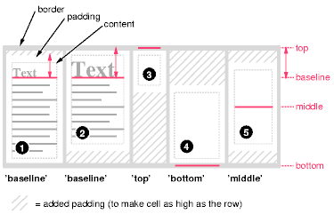 [D]
Диаграмма показывает действие различных значений 'vertical-align' в ячейках таблицы.
Боксы ячеек 1 и 2 выровнены по их базовым линиям. Бокс ячейки 2 имеет бóльшую высоту относительно базовой линии и поэтому определяет базовую линию ряда. Заметьте, что если нет ни одного бокса ячейки, выровненного по базовой линии, у ряда не будет (не нужна) базовой линии.
Чтобы исключить неоднозначные ситуации, выравнивание ячеек происходит в следующем порядке:
Боксы ячеек, которые меньше, чем высота ряда, получают дополнительное заполнение вверху или внизу.
Горизонтальное выравнивание содержимого ячейки в боксе ячейки специфицируется свойством 'text-align'.
Если значение свойства 'text-align' для более чем одной ячейки в столбце установлено в<string>, содержимое этих ячеек выравнивается вдоль вертикальной оси. Начало строки касается этой оси. Направление письма определяет, расположена строка слева или справа от оси.
Выравнивание текста таким способом возможно только тогда, когда текст входит на одну строку. Результат не определён, если содержимое ячейки занимает более одной строки.
Если значение 'text-align' ячейки таблицы это строка, но строка не появляется в содержимом ячейки, то конец содержимого ячейки соприкасается с вертикальной осью выравнивания.
Заметьте, что строки не должны быть теми же самыми для каждой ячейки, хотя, как правило, это и так.
CSS не предоставляет способа специфицировать смещение оси вертикального выравнивания относительно края бокса столбца.
Следующая таблица стилей:
TD { text-align: "." }
TD:before { content: "$" }
создаст столбец знаков доллара в следующей таблице HTML:
<TABLE> <COL width="40"> <TR> <TH>Long distance calls <TR> <TD> 1.30 <TR> <TD> 2.50 <TR> <TD> 10.80 <TR> <TD> 111.01 <TR> <TD> 85. <TR> <TD> 90 <TR> <TD> .05 <TR> <TD> .06 </TABLE>
для выравнивания десятичной точки. Шутки ради, мы использовали псевдоэлемент :before для того, чтобы вставить знак доллара перед каждым значением. Таблица может выглядеть так:
Long distance calls
$1.30
$2.50
$10.80
$111.01
$85.
$90
$.05
$.06
Свойство 'visibility' принимает значение 'collapse' для элементов ряда, группы рядов, столбца и группы столбцов. Это значение вызывает удаление целого ряда или столбца с экрана, и пространство, нормально занимаемое этим рядом или столбцом, становится доступным для другого содержимого. Подавление ряда или столбца не влияет, однако, на структуру таблицы. Это позволяет динамически удалять столбцы или ряды таблицы без форсирования реструктурирования таблицы для того, чтобы учесть возможные изменения в столбцах.
Имеются две различные модели установки рамок ячейки таблицы в CSS. Одна больше подходит для так называемых раздельных рамок вокруг отдельных ячеек, другая подходит для рамок, которые протянулись от одного конца таблицы до другого. Многие стили рамок могут получены с помощью такой модели, поэтому чаще всего - дело вкуса, какую модель использовать.
| Значение: | collapse | separate | inherit |
| Начальное: | collapse |
| Применяется: | к элементам 'table' и 'inline-table' |
| Наследуется: | да |
| Процентное: | N/A |
| Носитель: | визуальный |
Это свойство выбирает модель рамки таблицы. Значение 'separate' выбирает модель раздельных рамок. Значение 'collapse' выбирает модель сжимающихся рамок. Эти модели описаны ниже.
| Значение: | <length> <length>? | inherit |
| Начальное: | 0 |
| Применяется: | к элементам 'table' и 'inline-table' |
| Наследуется: | да |
| Процентное: | N/A |
| Носитель: | визуальный |
Размеры специфицируют расстояние, разделяющее рамки смежных таблиц. Если специфицирован один размер, он задаёт и горизонтальное, и вертикальное расстояние. Если специфицированы два, то первый задаёт расстояние по горизонтали, второй - по вертикали. Значения размеров не могут быть отрицательными.
В этой модели каждая ячейка имеет собственную рамку. Свойство 'border-spacing' специфицирует расстояние между рамками смежных ячеек. Это пространство заполняется фоном элемента таблицы. Ряды, группы рядов, столбцы и группы столбцов не могут иметь рамок (т.е. ПА обязаны игнорировать свойства рамки в таких элементах).
Таблица на рисунке может быть результатом такой таблицы стилей:
TABLE { border: outset 10pt;
border-collapse: separate;
border-spacing: 15pt }
TD { border: inset 5pt }
TD.special { border: inset 10pt } /* Верхняя левая ячейка */
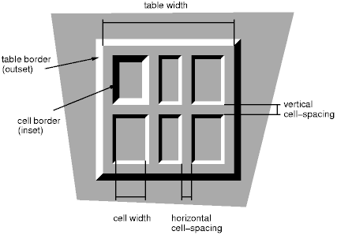 [D]
Таблица с 'border-spacing', установленным в значение размера. Заметьте, что у каждой ячейки имеется своя собственная рамка, а таблица также имеет отдельную рамку.
| Значение: | show | hide | inherit |
| Начальное: | show |
| Применяется: | к элементам 'table-cell' |
| Наследуется: | да |
| Процентное: | N/A |
| Носитель: | визуальный |
В модели раздельных рамок данное свойство управляет представлением рамок вокруг ячеек, не имеющих видимого содержимого. Пустые ячейки и ячейки со свойством 'visibility', установленным в 'hidden', рассматриваются как не имеющие видимого содержимого. Видимое содержимое включает " " и другие пробелы, за исключением ASCII-символов CR ("\0D"), LF ("\0A"), tab ("\09"), и space ("\20").
Если это свойство имеет значение 'show', рамки прорисовываются вокруг пустых ячеек (как вокруг нормальных ячеек).
Значение 'hide' указывает, что рамки вокруг пустых ячеек не будут прорисованы. Следовательно, если все ячейки в ряду имеют значение 'hide' и не имеют видимого содержимого, весь ряд ведёт себя так, как если бы он имел 'display: none'.
Следующее правило вызывает прорисовку рамок вокруг всех ячеек:
TABLE { empty-cells: show }
В модели сжимающихся рамок имеется возможность специфицировать рамки, окружающие все или часть ячеек, рядов, групп рядов, столбцов и групп столбцов. Рамки для атрибута HTML "rule" могут быть специфицированы таким способом.
Рамки центрируются по линиям сетки между ячейками. ПА обязаны находить подходящее правило для округления при наличии нестандартного числа абстрактных единиц измерения (пикселов экрана, точек принтера).
Диаграмма внизу показывает, как взаимодействуют ширина таблицы, рамок, заполнение и ширина ячеек. Их отношения задаются следующим уравнением, которое действует для каждого ряда таблицы:
row-width = (0.5 * border-width0) + padding-left1 + width1 + padding-right1 + border-width1 + padding-left2 +...+ padding-rightn + (0.5 * border-widthn)
Здесь n это число ячеек в ряду, а border-widthi относится к рамке между ячейками i и i + 1. Учтите только, что лишь половина из двух внешних рамок учитывается в ширине таблицы; другая половина этих двух рамок находится в области полей.
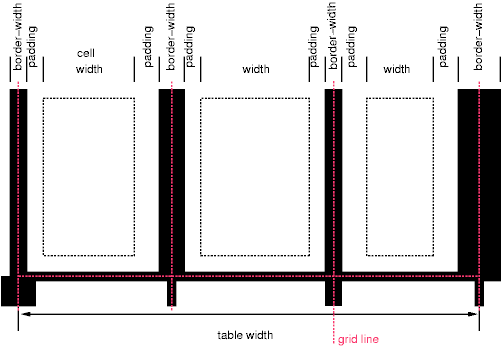 [D]
Схема показывает размеры ширины ячеек и рамок и заполнение ячеек.
Обратите внимание, что в этой модели ширина таблицы включает половину ширины рамки таблицы. Также в этой модели таблица не имеет заполнения (но имеет поля).
В модели сжимающихся рамок, рамки каждого края каждой ячейки могут быть специфицированы свойствами рамки различных элементов, находящихся у этого края (ячеек, рядов, групп рядов, столбцов, групп столбцов и самой таблицы), и эти рамки могут различаться по ширине, стилю и цвету. Основным правилом является то, что у каждого края выбирается самая "примечательная" рамка, за исключением тех случаев, когда появление стиля 'hidden' безусловно отключает вывод рамки.
Следующие правила определяют, какой стиль рамки "побеждает" в случае конфликта:
Следующий пример иллюстрирует приложение с такими правилами приоритета. Данная таблица стилей:
TABLE { border-collapse: collapse;
border: 5px solid yellow; }
*#col1 { border: 3px solid black; }
TD { border: 1px solid red; padding: 1em; }
TD.solid-blue { border: 5px dashed blue; }
TD.solid-green { border: 5px solid green; }
с этим HTML:
<P>
<TABLE>
<COL id="col1"><COL id="col2"><COL id="col3">
<TR id="row1">
<TD> 1
<TD> 2
<TD> 3
</TR>
<TR id="row2">
<TD> 4
<TD class="solid-blue"> 5
<TD class="solid-green"> 6
</TR>
<TR id="row3">
<TD> 7
<TD> 8
<TD> 9
</TR>
<TR id="row4">
<TD> 10
<TD> 11
<TD> 12
</TR>
<TR id="row5">
<TD> 13
<TD> 14
<TD> 15
</TR>
</TABLE>
даст в результате что-либо подобное:
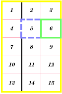 [D]
Пример таблицы со сжимающимися рамками.
В следующем примере показана таблица с горизонтальными линиями между рядами. Верх рамки таблицы установлен в 'hidden', чтобы подавить верхний край рамки первого ряда. Это - выполнение атрибута "rules" HTML 4.0 (rules="rows").
TABLE[rules=rows] TR { border-top: solid }
TABLE[rules=rows] { border-collapse: collapse;
border-top: hidden }
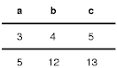 [D]
Таблица с горизонтальными линиями между рядами.
В этом случае того же эффекта можно достичь без установки рамки 'hidden' в TABLE: путём адресации первого ряда отдельно. Какой метод предпочесть - дело вкуса.
TR:first-child { border-top: none }
TR { border-top: solid }
Вот другой пример скрытых сжимающихся рамок:
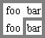 [D]
Таблица с двумя пропущенными внутренними рамками.
HTML-источник:
<TABLE style="border-collapse: collapse; border: solid;">
<TR><TD style="border-right: hidden; border-bottom: hidden">foo</TD>
<TD style="border: solid">bar</TD></TR>
<TR><TD style="border: none">foo</TD>
<TD style="border: solid">bar</TD></TR>
</TABLE>
Некоторые значения 'border-style' имеют в таблице иной смысл в сравнении с другими элементами. В следующем списке они помечены звёздочкой.
Когда таблица читается синтезатором речи, отношения между ячейками данных и заголовочными ячейками обязаны быть выражены иначе, чем отношения вертикального и горизонтального выравнивания. Некоторые синтезаторы речи могут позволять пользователям "перемещаться" в 2-мерном пространстве, давая таким образом возможность отображения пространственных соотношений. Если это невозможно, таблица стилей обязана специфицировать, с какого места произносятся заголовки.
| Значение: | once | always | inherit |
| Начальное: | once |
| Применяется: | к элементам. имеющим информацию "шапки" таблицы |
| Наследуется: | да |
| Процентное: | N/A |
| Носитель: | звуковой |
Это свойство специфицирует, произносятся
ли заголовки перед каждой ячейкой (данных),
или только перед той ячейкой, которая
ассоциирована с другим заголовком.
Значения имеют следующий смысл:
Каждый язык документов может иметь различные механизмы спецификации заголовков. Например, в HTML 4.0 ([HTML40]) можно специфицировать заголовочную информацию тремя различными атрибутами ("headers", "scope" и "axis"), и спецификация предоставляет алгоритм для определения заголовочной информации, когда эти атрибуты не специфицированы.
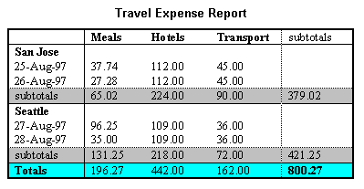 [D]
Изображение таблицы с заголовочными ячейками ("San Jose" и "Seattle"), которые не находятся в одном столбце или ряде с данными, к которым они относятся.
Этот пример HTML представляет денежный расчёт расходов на питание, гостиницу и транспорт в двух местах (San Jose и Seattle) на несколько дней. Концептуально Вы можете представлять таблицу в терминах n-размерного пространства. Заголовками этого пространства являются: место, день, категория и итог. Некоторые ячейки определяют метки вдоль оси, а другие дают подсчёт денег в точке данного пространства. Вот разметка для этой таблицы:
<TABLE> <CAPTION>Travel Expense Report</CAPTION> <TR> <TH></TH> <TH>Meals</TH> <TH>Hotels</TH> <TH>Transport</TH> <TH>subtotal</TH> </TR> <TR> <TH id="san-jose" axis="san-jose">San Jose</TH> </TR> <TR> <TH headers="san-jose">25-Aug-97</TH> <TD>37.74</TD> <TD>112.00</TD> <TD>45.00</TD> <TD></TD> </TR> <TR> <TH headers="san-jose">26-Aug-97</TH> <TD>27.28</TD> <TD>112.00</TD> <TD>45.00</TD> <TD></TD> </TR> <TR> <TH headers="san-jose">subtotal</TH> <TD>65.02</TD> <TD>224.00</TD> <TD>90.00</TD> <TD>379.02</TD> </TR> <TR> <TH id="seattle" axis="seattle">Seattle</TH> </TR> <TR> <TH headers="seattle">27-Aug-97</TH> <TD>96.25</TD> <TD>109.00</TD> <TD>36.00</TD> <TD></TD> </TR> <TR> <TH headers="seattle">28-Aug-97</TH> <TD>35.00</TD> <TD>109.00</TD> <TD>36.00</TD> <TD></TD> </TR> <TR> <TH headers="seattle">subtotal</TH> <TD>131.25</TD> <TD>218.00</TD> <TD>72.00</TD> <TD>421.25</TD> </TR> <TR> <TH>Totals</TH> <TD>196.27</TD> <TD>442.00</TD> <TD>162.00</TD> <TD>800.27</TD> </TR> </TABLE>
Представляя модель данных таким образом, авторы дают возможность браузерам с синтезом речи работать с таблицей различными способами, например, каждая ячейка может проговариваться как список с повторением соответствующих заголовков перед каждой ячейкой данных:
San Jose, 25-Aug-97, Meals: 37.74 San Jose, 25-Aug-97, Hotels: 112.00 San Jose, 25-Aug-97, Transport: 45.00 ...
Браузер может также проговаривать ячейки, только если они изменяются:
San Jose, 25-Aug-97, Meals: 37.74
Hotels: 112.00
Transport: 45.00
26-Aug-97, Meals: 27.28
Hotels: 112.00
...